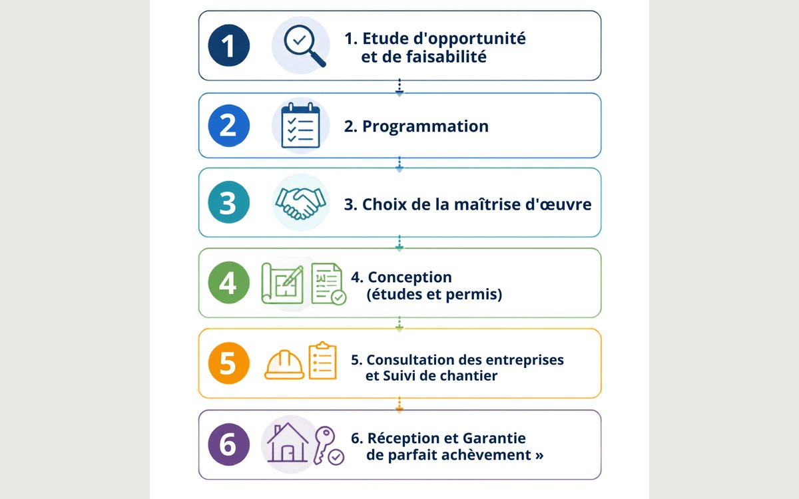

Collectivités & bâtiments publics
Mairies, écoles, salles polyvalentes, équipements sportifs… Je suis le relais technique des élus qui n'ont pas de service technique en interne, à chaque étape du projet.
Voir l'accompagnementCollectivités, entreprises, particuliers : j'accompagne tous ceux qui ont un projet de construction ou de réhabilitation et qui ont besoin d'un regard technique fiable, du premier rendez-vous jusqu'à la livraison.

Que vous soyez élu d'une petite commune, porteur d'un projet immobilier privé ou professionnel de l'immobilier d'entreprise, je m'adapte à votre réalité et à vos contraintes.
Mairies, écoles, salles polyvalentes, équipements sportifs… Je suis le relais technique des élus qui n'ont pas de service technique en interne, à chaque étape du projet.
Voir l'accompagnementÉtudes de faisabilité, projets de gîtes et d'hébergements touristiques, SCI familiales : je sécurise vos projets de construction ou de réhabilitation.
Voir l'accompagnementLocaux d'activité, bureaux, sites tertiaires : un accompagnement AMO pour les professionnels de l'immobilier d'entreprise, de l'étude à la réception.
Voir l'accompagnementAvant de fonder La Clef de Voûte, j'ai piloté des projets exigeants pour le compte de maîtres d'ouvrage publics et privés. Une expérience que je mets aujourd'hui au service de projets de toutes tailles.
« Je sais ce que représente un projet de construction ou de réhabilitation, techniquement, financièrement, humainement. C'est pourquoi je prends la complexité à ma charge, pour que vous restiez concentré sur l'essentiel : votre projet. »
Fanny Prieto, fondatrice de La Clef de VoûteRéglementation, étapes clés, bonnes pratiques : des articles courts pour avancer sereinement dans votre projet.
Sans service technique en interne, porter seul un projet de bâtiment public est un vrai risque. Voici comment un AMO change la donne.
Lire l'article
De la programmation à la réception des travaux, le fil conducteur d'un projet de bâtiment public réussi.
Lire l'articleDeux métiers complémentaires, souvent confondus. On fait le point pour savoir qui fait quoi sur votre projet.
Lire l'articlePremier échange gratuit et sans engagement pour comprendre votre besoin.